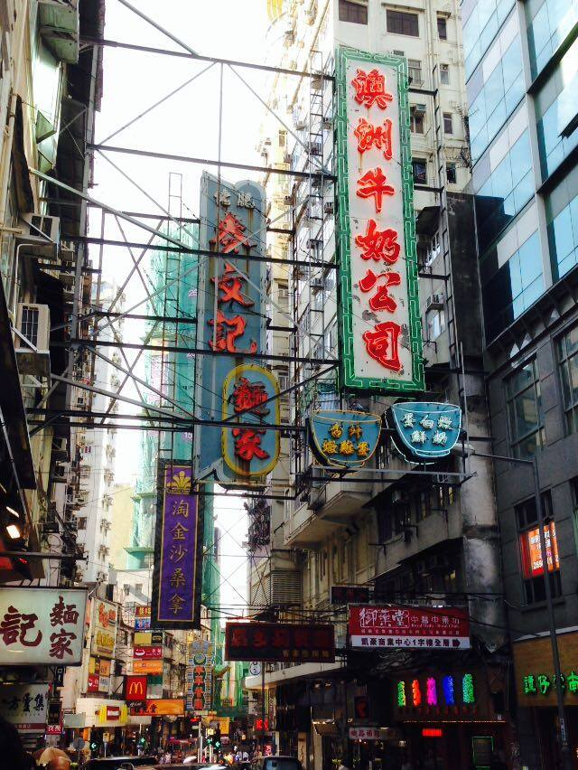
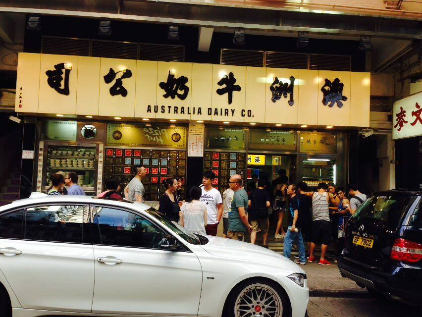
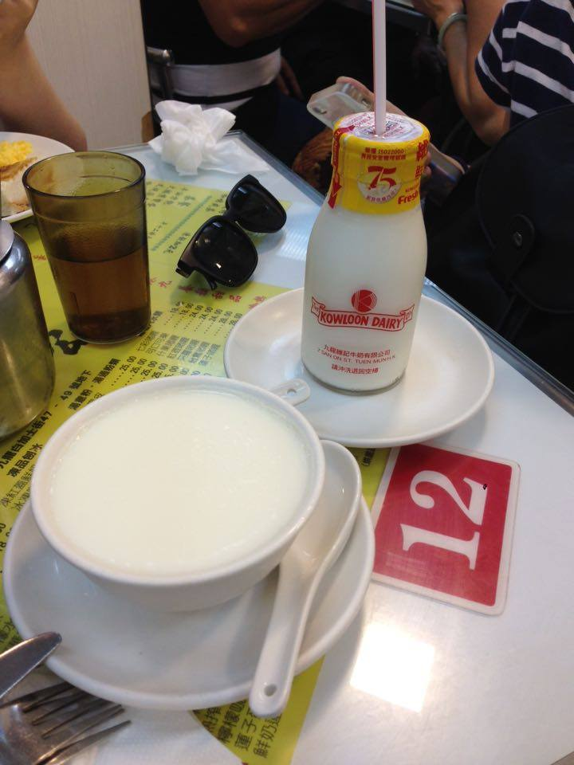
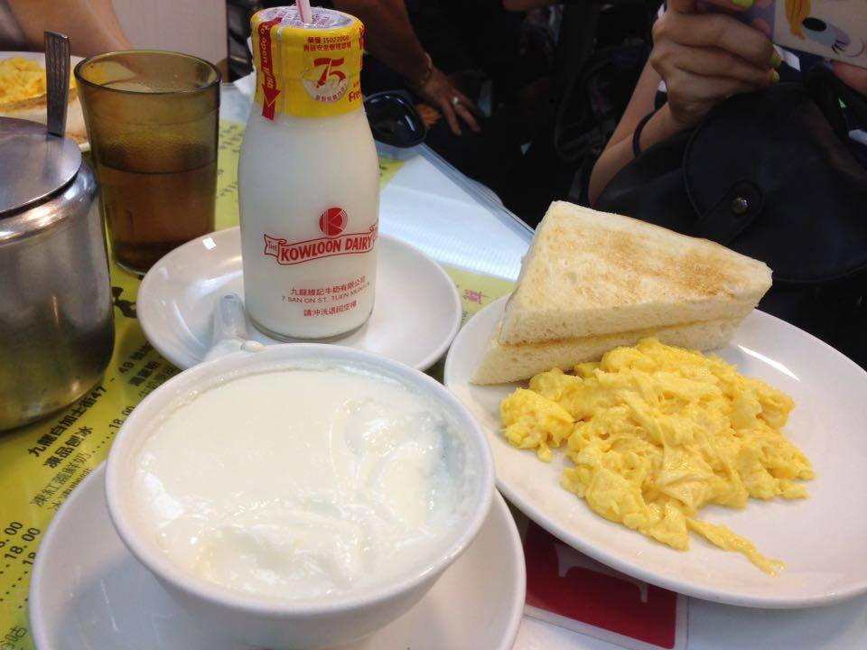

香港佐敦，澳洲牛奶公司 (造訪日期:2015/08/02)
回首頁
第一段：醒目的店招牌外觀
第二段：兩道菜經典菜介紹
第一段：醒目的店招牌外觀

佐敦站的澳洲牛奶公司，每次到香港第一站景點，不吃像沒來過香港一樣~~

不論是否是吃飯時間總是大排長龍~
第二段：兩道菜經典菜介紹

店內招牌:蛋白燉鮮奶~ 喜歡濃厚牛奶味的會蠻喜歡這道帶點甜味的港點~~

店員推薦的炒蛋~ 看店內幾乎每桌都有點，單吃會覺得味道偏鹹，配著烤土司吃意外的非常好吃跟match。
回首頁